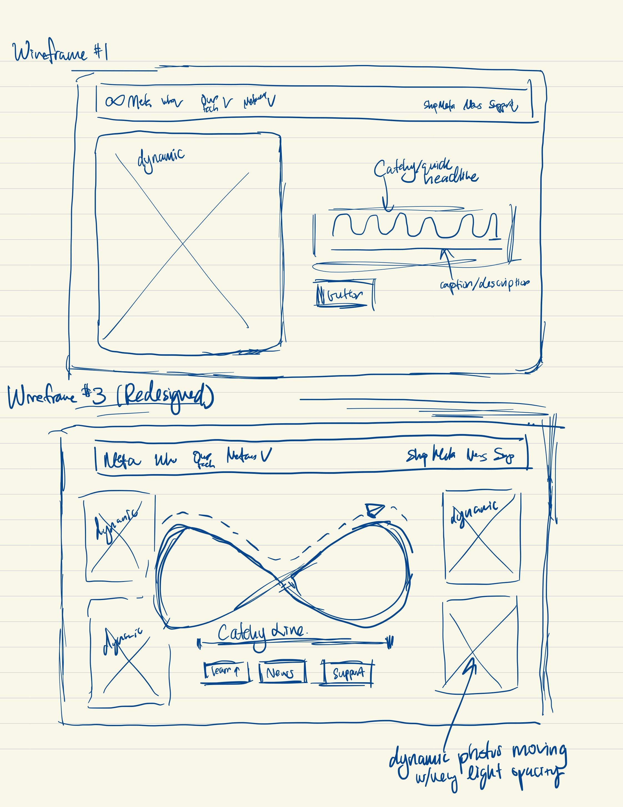

-
Using the favorite website you chose in homework 1, create a wireframe for one page of it using pen/paper, PowerPoint, or any your tool of choice. (use the 'img' tag!) Make sure to let us know what the name of your website is (Use the 'p' tag!)
WIREFRAME FOR META'S WEBSITE (Look at Wireframe #1)
 -
Try to improve the website you've chosen, and create a redesigned wireframe of one page for the same website using the principles of visual hierarchy that you learned from the article.
REDESIGNED WIREFRAME FOR META'S WEBSITE (Look at Wireframe #3)
-
What is the goal of the website? Who is it intended for? How does the design accomplish this? Write 2-3 sentences answering these questions. (Use the 'p' tag again!)
The goal of this website is to introduce Meta and its mission in a clear and concise manner. The design is very simple and easy to navigate, with a clear photo on the side and a button for users to learn more. It is intended for anyone using Meta's services (Insta, FB, Threads etc).
-
Write 2-3 sentences about what problems your redesign addressed, and how it solved them.
The redesign makes Meta's biggest product/idea, the "Metaverse," more apparent with the large logo in the middle and an impactful statement that gets to the point. The three buttons instantly also makes navigation easier, and the very light/low opacity photos floating in the back provide more visuals than the relatively static, big image that is currently on the site.
NOTE: Make sure to include the wireframe images in the website and don't just put it in your assets folder!
Your wireframes should look something like this: